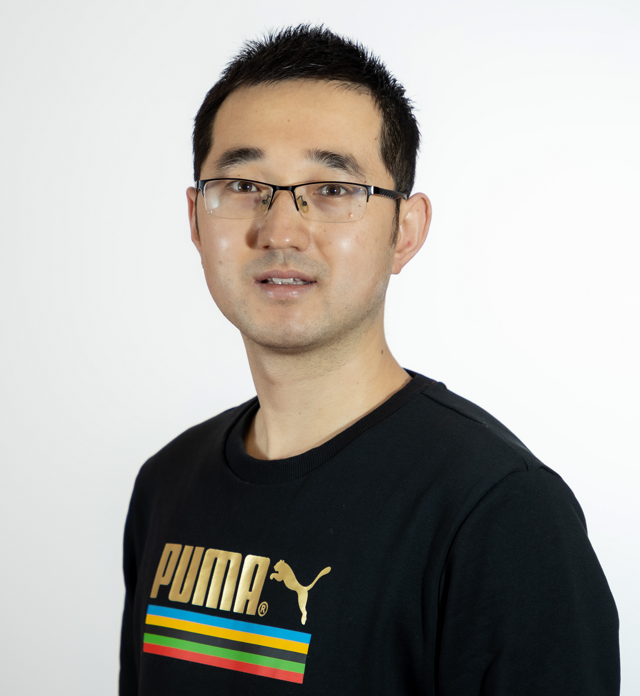

Address: 4 Boulevard Des Lumieres, Esch-Sur-Alzette, L-4369, Luxembourg
Email: tong.wei@uni.lu
Phone: +352 661646060
I am a doctoral researcher, supervised by Prof. Dr. Bhavani Shankar Mysore in the SPARC group, Interdisciplinary Security and Trust Centre (SnT), University of Luxembourg (UL). Prior to that, I obtained my bachelor's degree in June 2017 from Hainan University and then my master's degree in June 2020 from Shenzhen University, under the supervision of Prof. Dr. Bin Liao.
Research interests:
Google Scholar / Resaerch Gate
IEEE SAM 2022 IRS-Aided Wideband Dual-Function Radar-Communications with Quantized Phase-Shifts
Tong Wei, Linlong Wu, Kumar Vijay Mishra, Bhavani Shankar M. R.,
Accepted in Proceedings of 2022 IEEE 12th Sensor Array and Multichannel Signal Processing Workshop, Trondheim, Norway, 20-23 June 2022. IEEE.
IEEE JC&S 2022 Multiple IRS-Assisted Wideband Dual-Function Radar-Communication
Tong Wei, Linlong Wu, Kumar Vijay Mishra, Bhavani Shankar M. R.,
Accepted in Proceedings of 2022 2nd IEEE International Symposium on Joint Communications & Sensing, Seefeld, Austria, 09-10 March 2022. IEEE.
Signal Processing Transmit Beampattern Synthesis for MIMO Radar with One-bit Digital-to-analog Converters
Tong Wei, Z. Cheng and B. Liao*,
Accepted for publication in Signal Processing, vol. 188, p. 108228, Nov. 2021. Elsevier.
IEEE SAM 2020 Transmit Beampattern Design for MIMO Radar with One-bit DACs via Block-sparse SDR
Tong Wei, P. Chu, Z. Cheng and B. Liao,
Accepted in Proceedings of 2020 IEEE 11th Sensor Array and Multichannel Signal Processing Workshop, Hangzhou, China, 08-11 June 2020. IEEE.
IEEE ICASSP 2019 MIMO Radar Transmit Beampattern Synthesis via Waveform Design for Target Localization
Tong Wei, Huiping Huang, Bin Liao,
Accepted in Proceedings of 2019 IEEE International Conference on Acoustics, Speech and Signal Processing, Brighton, UK, 12-17 May 2019. IEEE.
IEEE SAM 2018 Online Mutual Coupling Calibration Using a Signal Source at Unknown Location
Tong Wei, Bin Liao, Huiping Huang, Zhi Quan,
Accepted in Proceedings of 2018 IEEE 10th Sensor Array and Multichannel Signal Processing Workshop, , Sheffield, UK, 08-11 July 2018. IEEE.